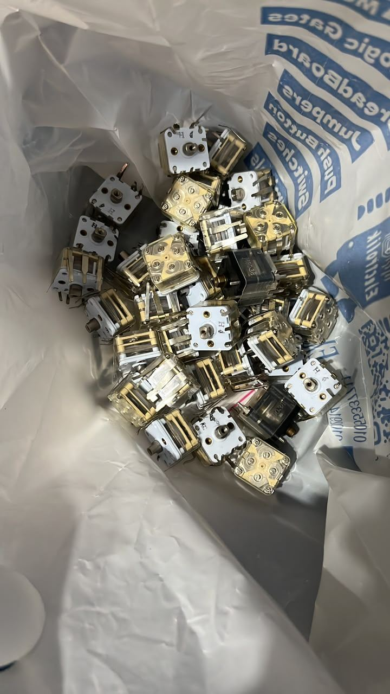
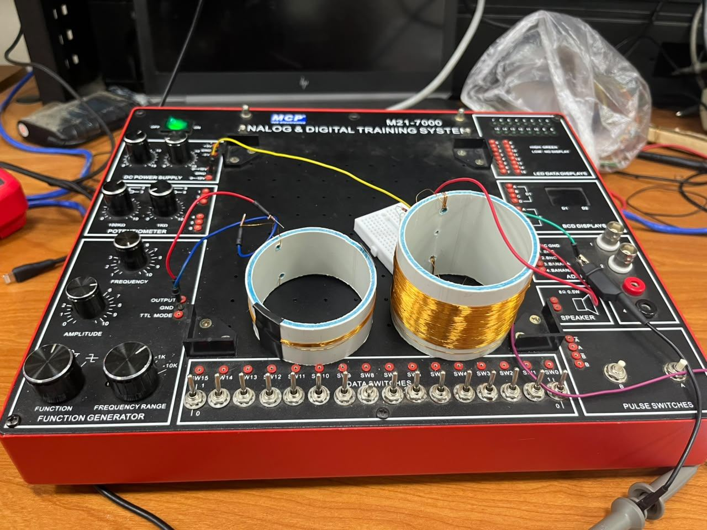
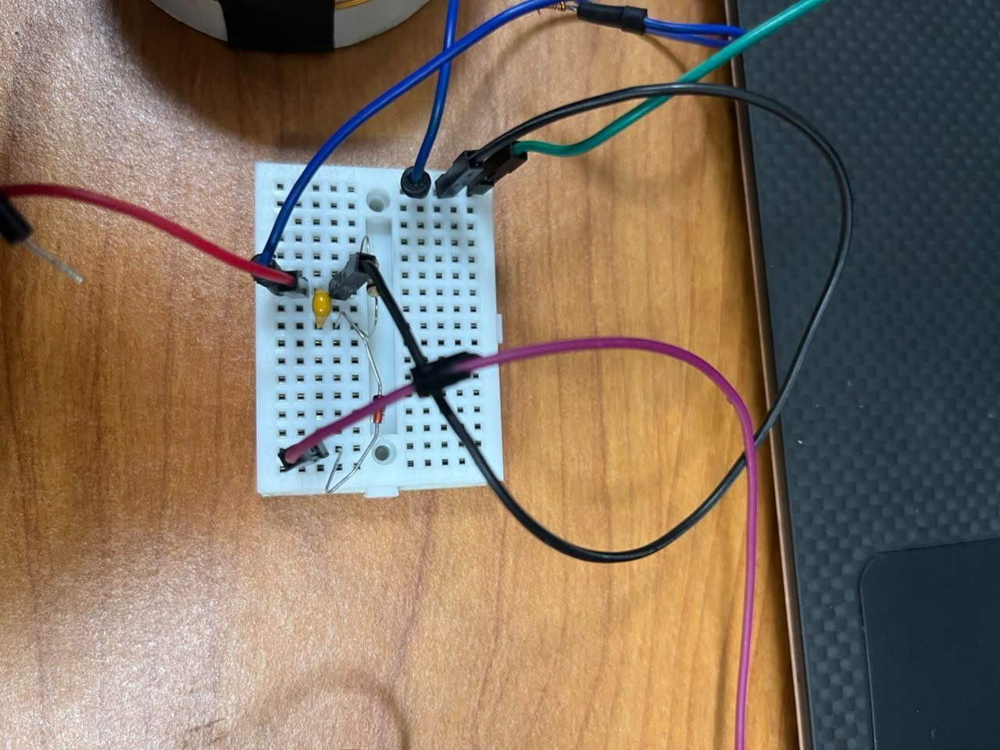
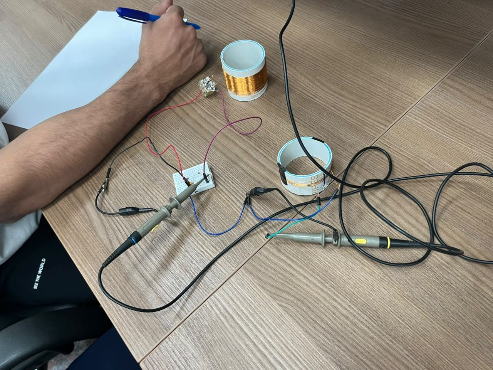
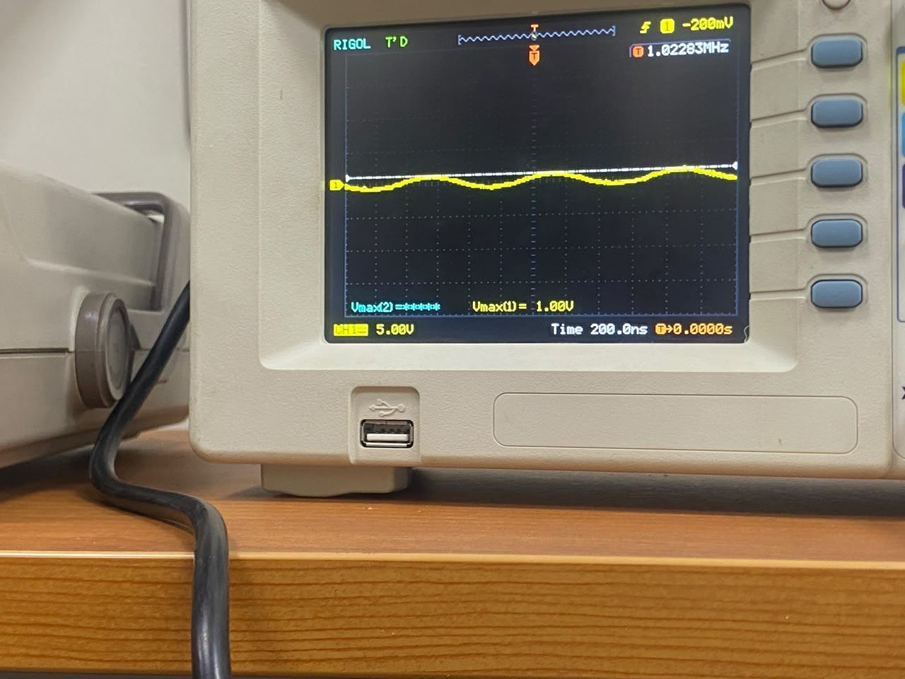
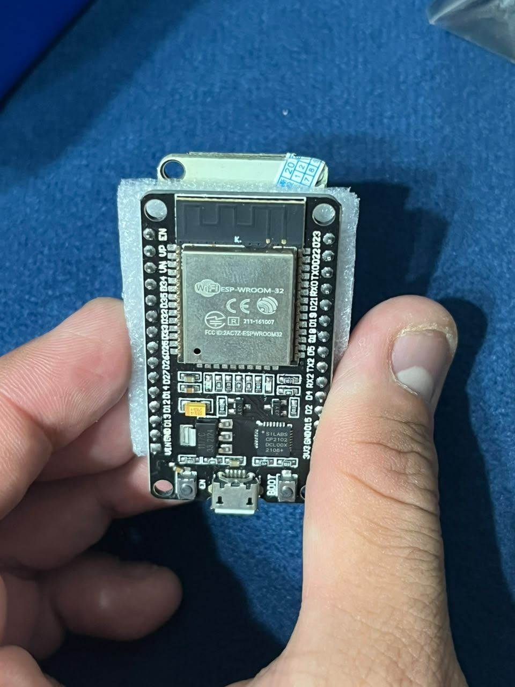
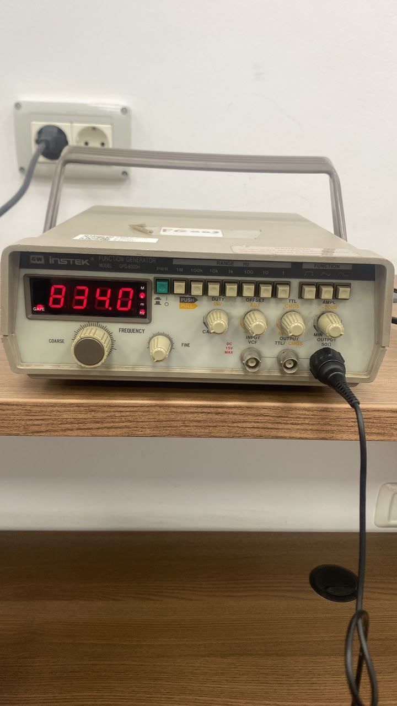
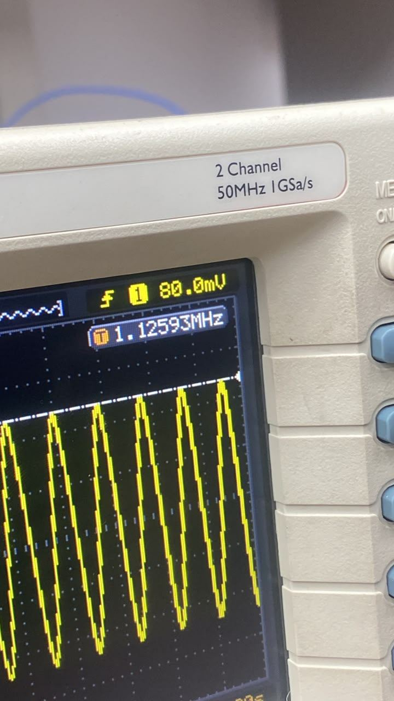
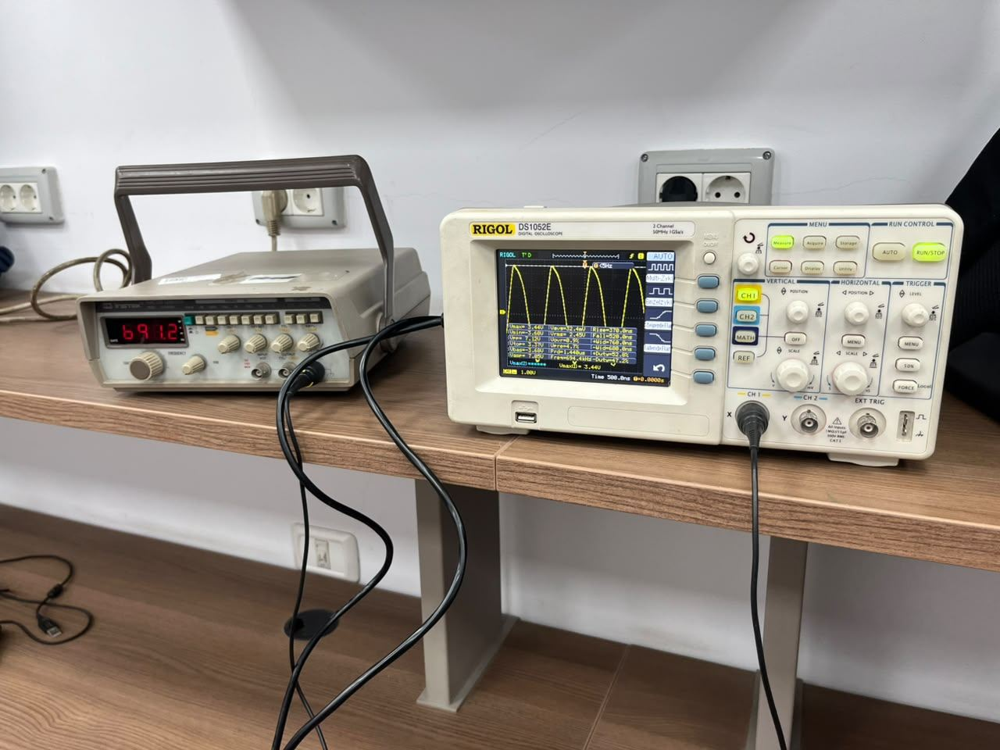

Two halves: pick a station, then pull the sound out
An AM radio starts with the two circuits we build in Milestone 1. The tuner (a coil and a capacitor) resonates at one frequency and ignores the rest. The detector (a diode, a resistor and a capacitor) throws away half of the wave and smooths what is left, so only the slow shape of the signal, the sound, survives. Tap the buttons to light up each half.
Watch the sound come out
Modulation depth (how loud the "station" is):
Before touching a wire, we had to understand the parts
We started by learning what each element does and how it fits the project. We watched many technician tutorials until the roles were clear: the coil and capacitor choose a frequency, the diode keeps one side of the wave, the resistor and capacitor smooth it.
Then came the hunt. These parts are not easy to find in the stock market. We searched around, checked that what was on the table was really what the circuit needs, and bought sets for ourselves and our colleagues.

| Part | Value | Its job |
|---|---|---|
| Enamelled copper wire | 0.3 mm, about 12 m | The coil, L |
| PVC pipe | 50 mm diameter | The coil former |
| Tuning capacitor | 20 to 280 pF (AM section) | Tunes the station, C |
| 1N60P diode | band toward TP3 | Keeps the wave's peaks |
| Resistor + capacitor | 15 kΩ and 3.3 nF | Smooth to the envelope |
DIY tip
A tuning capacitor has several sections and many pins. Only its AM section gives the 20 to 280 pF range. Tutorials taught us how to tell the pins apart.Three ideas, each doing one job
After the parts, we watched more tutorials on how a crystal radio works: rectification, the smoothing capacitor and how an envelope is extracted from a carrier. They boil down to three ideas.
1 · Resonance
A coil and a capacitor swing energy back and forth at f₀ = 1 / (2π√LC). At that frequency the voltage across the tank is the largest, so one station stands out.
2 · Rectification
The diode only conducts one way, so the negative half of the carrier is cut off. What is left follows the signal's peaks.
3 · Smoothing
RC = 15 kΩ × 3.3 nF ≈ 50 µs. That is slower than one carrier cycle (about 1.2 µs at 819 kHz) but faster than audio (200 µs at 5 kHz), so the voltage follows the envelope, the sound.
Try it: Wheeler's coil calculator
Turns Diameter (mm) Length (mm)L ≈ 291.45 µH. Tuned with C = pF it resonates at 819 kHz.
Do the maths before the soldering
Wheeler's formula, L ≈ d²n² / (457d + 1016l), with n = 75 turns, d = 50 mm and l = 25 mm gives the coil. From L, the tuning formula gives the capacitor for 819 kHz and the two ends of the band.
| L (µH) | C for 819 kHz (pF) | f at 280 pF (kHz) | f at 20 pF (MHz) | RC (µs) | |
|---|---|---|---|---|---|
| Prediction | 291.45 | 129.5 | 557 | 2.084 | 49.5 |
Table 4 of the lab. These numbers are what we measure against in Step 7.
Wind the coil, mount the capacitor
We watched how technicians wrap a coil on a PVC pipe, then built the circuit quickly. The hands-on part is short once the prep is done.
Do this
- Tape the wire's start to the pipe.
- Wind 75 turns side by side, no gaps, no crossings (about 25 mm long).
- Tape the end.
- Scrape 1 cm of enamel off both ends until the copper shines.
- Fix the capacitor to the pipe with tape or glue.
- Join the coil's ends to the capacitor's AM terminals.

One diode, one resistor, one capacitor
Do this on the breadboard
- Put the 1N60P from TP1 (top of the tank) to TP3, with its band toward TP3.
- Put the 15 kΩ and the 3.3 nF side by side from TP3 to ground (the tank's other end).
- Probe TP1 on the scope with probe and channel both on ×10. A ×1 probe adds about 100 pF and detunes the tank.


The circuit was easy. Finding a working instrument was not.
We built the circuit in no time. Then we discovered the real problem: to test a radio you need a function generator and an oscilloscope that actually work, and we could not find them.



Lesson
Check your instruments before you trust your circuit. Compensate the probe, confirm the generator's real output, and know a source's limits. A sound card tops out near 20 kHz and an ESP32 near 750 kHz, both far from an AM band that starts around 560 kHz.Does the tank resonate where the maths said?
We drove a 5-turn test loop from the generator, a few centimetres from the coil on the same axis, and looked for the peaks at TP1: first at half travel for f₀, then at each end of the capacitor's travel, then the 0.7 points for the bandwidth.
| Band low end (kHz) | Band high end (MHz) | f₀ at half travel (kHz) | f_low (kHz) | f_high (kHz) | Q |
|---|---|---|---|---|---|
| 422.74 | 0.75 | 567.4 | 513.6 | 624 | 5.13 |
Selectivity
The 0.7-of-peak points are 513.6 and 624 kHz, a bandwidth of about 110 kHz around 567.4 kHz.
A modest Q: the tank picks a neighbourhood of frequencies, not a single line. Fine for a first radio, and something to improve.


To be continued..
M1 gave us a tuner that picks a frequency and a detector that finds the envelope. Next, the radio needs gain, so weak stations rise above the diode's dead zone and the sound can drive a speaker.
This section will grow as the next milestone is built.